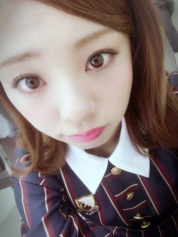
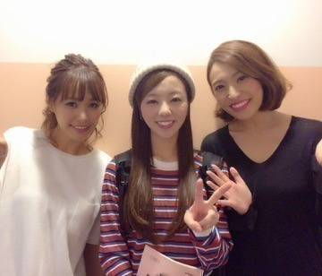
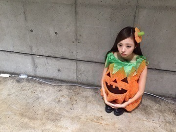
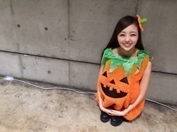

おつかれちゃん♡

皆ぁ～ 沢山のコメントありがとう！
「THEカラオケ☆バトル」のOA後から沢山の温かいメッセージを頂きました．
チェックしてくれた皆は知ってるけど，改めて、、、、
私、決勝に行きました～‼︎‼︎
やったよやったよ...(´；ω；`)
もう前日はどおなる事やらと思ってたんだけど，どうにかBブロックで1位になり決勝進出できました。
そろそろ本気で結果を残さなきゃと必死の思いでした！！
メンバーやスタッフさんも皆応援してくれて，それに皆さんにも支えられていたよ♫
決勝戦の後に３人で撮ったよー！

RiRiKAさんが，ずっと「まひろちゃん可愛い可愛い♡」と言ってくださってたんですよ...。
凄く可愛がってくださりました。ありがとうございました！
もし又出演することになったら本気で優勝狙いますね(*^o^*) 林部智史さんの様に，カラオケバトルで結果を残してソロで活躍できる歌手になれる様，これからも頑張り続けます♡
ぁ！そーいやハロウィンの時の♡
かぼちゃ。

ヘタ付きだよ。

またねー♡